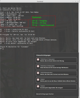
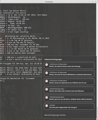
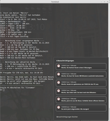
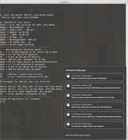
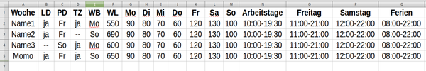

kidsControl
Archivierte Anleitung
Dieser Artikel wurde archiviert, da er - oder Teile daraus - nur noch unter einer älteren Ubuntu-Version nutzbar ist. Diese Anleitung wird vom Wiki-Team weder auf Richtigkeit überprüft noch anderweitig gepflegt. Zusätzlich wurde der Artikel für weitere Änderungen gesperrt.
Achtung!
Die Verwendung dieses Howto geschieht auf eigene Gefahr. Bei Problemen mit der Anleitung melde dies bitte in der dazugehörigen Diskussion und wende dich zusätzlich an den Verfasser des Howtos.
Hinweis:
Diese Howto-Anleitung wurde zuletzt von mo2mo am 30.11.2015 unter Ubuntu 14.04.3 erfolgreich getestet.
Vorwort¶
Zeitlimits für die Computernutzung und Sperrzeiten für und mit den Kinder festzulegen – leidgeprüfte Eltern können mit „kidsControl“ dies unter Linux nun bequem und einfach erledigen. Mehrere Kinder – kein Problem. Und unter der Bedingung, dass Wochenguthaben und Tageslimits nicht immer vollständig ausgeschöpft werden und die Eltern es wollen, dürfen Kinder sogar mitzubestimmen: Tages-Zusatzzeit, PC- und longDay – "kidsControl" ist also mehr, als nur eine einfache Zeitschaltuhr. Wenn das keinen Spaß macht. 
"kidsControl" - Kinder können kreativ mitbestimmen¶
Ein Skript, der beim Anmelden des Nutzer automatisch startet und wie eine Zeitschaltuhr zur Begrenzung der Nutzerzeit am Computer dient. Durch Optionen kann zwischen sturem Zeitplan oder verschiedenen Varianten an kreativer Mitbestimmung von Ausschalt-Zeitpunkt und Zeitkontingent durch den Nutzer gewählt werden.
Features¶
Anfangs- und Endzeiten getrennt einstellbar
„kidsControl“ ist einfach an Linux-Distros anpassbar
Nutzer können ihren Zeitrahmen - wenn erlaubt - mitbestimmen:
longDay (LD) = abends länger surfen
PC-Day (PD) = 1x pro Woche mit superlanger Computer-Zeit
Tages-Zusatzzeit (TZ) - berechnet aus dem unverbrauchten Guthaben der Vorwochen
Tabelle zur einfachen Nutzer-Verwaltung
Wochenbeginn (WB) wahlweise am Sonn- oder Montag
Wochenguthaben (WG) und Tageslimit
Wochen- und Jahres-Tabellen als Übersicht
Die Programmteile¶
kidsControl
kidsControl.ini
Limits4Kids.csv
Zeit-Kontrolle.desktop (als Starter)
hist - ein Unterordner im Skript-Verzeichnis
Alle Dateien können über die Projektseite  bezogen werden.
bezogen werden.
Die Einrichtung¶
Als "root" in fünf Schritten am Ziel!
Das "kidsControl"-Archiv nach "/usr/local" entpacken. Beim Entpacken werden der Ordner "kc" und darin der Unterordner "hist" mit angelegt.
Die Tabelle "Limits4Kids.csv" per Editor oder Tabellen-Programm mit eigenen Werten befüllen.
In der Datei "kidsControl.ini" die Variablen "log_Out", "message", "PC_down" und "timePic" ans eigene System anpassen.
Den Starter "Zeit-Kontrolle.desktop" nach "/etc/xdg/autostart" verschieben.
In der Datei "/etc/../PostSession/Default" folgender Eintrag vor "exit 0" zu machen
1 2
# Computer-Nutzungs-Dauer auswerten /usr/local/kc/kidsControl outDieser Eintrag startet die Zeitmessung und ermöglicht damit erst die eigentlichen Features. Ohne diesen Eintrag arbeitet "kidsControl" wie eine einfache Zeitschaltuhr. Die genaue Pfadangabe zur "PostSession/Default" ist vom Linux-System und dessen Displaymanager abhängig. Alternativ kann der gleiche Eintrag zum "Betätigen der Stoppuhr" in der "$HOME/.bash_logout" (s. ubuntu-Manuals) oder in einer anderen Datei erfolgen, die vom verwendetem Linux-System beim Abmelden oder Ausschalten abgefragt, bzw., gestartet wird. Da "kidsControl" für die Bourne-Shell geschrieben wurde, dürfte es mit keinem Linux-System ein Problem geben, denn systemspezifische Anpassungen erfolgen in der "kidsControl.ini".
Zu beachten ist, dass "root" Eigentümer aller Programmdateien und -ordner bleibt. Die dazugehörende Rechte-Verteilung, ist in der "Liesmich" nachzulesen. Mit einem Neustart wird die "Zeit-Kontrolle" per Autostart aktiv. Wer das nicht möchte, kann im Wiki nachlesen, wie es anders geht.
Der Starter kann beliebig im System verschoben werden, am besten an den Ort, der für einen systemweiten Autostart zuständig ist. Kopieren in die Nutzer-Autostart-Ordner ist auch möglich. Wird "kidsControl" an einem anderen Speicherort als in "/usr/local" eingerichtet, ist im Starter "Zeit-Kontrolle.desktop" der Pfad zu "kidsControl" anzupassen.
Mit der "kidsControl.ini" werden die Variablen der Kommandos fürs Abmelden und Ausschalten, das Programm für die Desktop-Nachrichten sowie der Pfad zum Anzeigebild festgelegt. Für die temporäre Dateien wird der tmp-Ordner des Systems genutzt. Im hist-Ordner des Archiv befinden sich zusätzlich ein paar Beispiele zum Ausprobieren. Das Archiv beinhaltet neben den unten aufgeführten Bildern noch eine Anleitung und eine Liesmich mit weiteren Infos.
Hinweis:
Erst probieren (Test-Modus), dann verwenden und auch die Infos in der Anleitung und Liesmich beachten.
Die ersten Starts als Bild¶
|  |
| 1. Start mit neuem Nutzer |
|  |
| 2. Start - es gibt bereits Zusatzzeit |
|  |
| Eine Woche mit Zusatzzeit: Abends noch nicht länger |
|  |
| Endlich abends viel länger und mit super viel PC-Zeit |
Durchgeführt wurden die Starts mit den Optionen LD + TZ = ja, PD = So. Die ausführlichen Infos gibt's nur im Terminal zu sehen, im Normalmodus werden natürlich nur die Benachrichtigungen einzeln ausgegeben. Die Zeiten sind auch nicht ganz real , jedoch ist erkennbar, wie der Skript in Abhängigkeit vom Guthaben die Zeiten berechnet. Dass der longDay (LD) - abends länger surfen - nicht gleich gewährt wird, ist gewollt: "It's not a bug, it's a feature!" Es braucht eben etwas Zeit, bis man dem Nutzer voll vertrauen darf.
Im Terminal kann mit den Nutzern Momo, Max oder Moritz der Skript getestet werden:
kidsControl test momo
Dann kann dem Verlauf (s. Bilder) zu gesehen werden. Eine Abmeldung wird dann nur simuliert. Ohne "momo" wird mit dem gerade angemeldeten Nutzer getestet. Ohne Option läuft "kidsControl" direkt im Nutzermodus. Doch macht es nicht wirklich Sinn, 100 Minuten aufs Ausschalten zu warten. Dafür ist der Starter im Autostart vorgesehen. Einmal eingerichtet arbeitet "kidsControl" autark und sorgt so dafür, dass die Nutzer auch noch Zeit für andere Dinge haben.
Die Nutzer-Tabelle¶
|  |
| ermöglicht individuelle Einstellungen für Tageslimits, Wochenzeiten und -beginn, Zusatzzeit sowie long- und PC-Day |
1 2 3 4 5 | Woche,LD,PD,TZ,WB,WG,Mo,Di,Mi,Do,Fr,Sa,So,Arbeitstage,Freitag,Samstag,Ferien Name1,--,--,--,Mo,550,90,80,70,60,120,130,100,10:00-19:30,11:00-21:00,12:00-22:00,08:00-22:00 Name2,ja,Fr,--,So,690,90,80,70,60,120,130,100,11:00-19:30,11:00-21:00,12:00-22:00,08:00-22:00 Name3,--,So,ja,Mo,600,90,80,70,60,120,130,100,12:00-19:30,11:00-21:00,12:00-22:00,08:00-22:00 Name4,ja,Fr,ja,So,650,90,80,70,60,120,130,100,17:00-21:30,12:00-22:00,12:00-22:00,08:00-22:00 |
Ob eine Tages-Zusatzzeit, gewährt wird, kann über die TZ-Option eingestellt werden. Diese Zeit wird vor jeder Compuer-Nutzung neu berechnet.
Übrigens kann das Wochenguthaben von der Summe der Tageslimits abweichend sein. Es darf höher, niedriger oder gleich sein. Das ist egal, jedoch sehr verschieden in der Wirkung. Insgesamt gibt es 2 hoch 3 Einstellvarianten - also viel Spaß beim Ausprobieren.
Was noch möglich wäre¶
Auswertung der Jahres-Tabelle - alles pro Nutzer auf einen Blick
Nutzerzeiten mit Ferien-Modus (in der Tabelle bereits vorbereitet)
Passwortgeschützter Notschalter oder "Mutti"-Freigabe, falls Zeit verbraucht und "Klassenarbeit" droht.
 - wirklich notwendig?
- wirklich notwendig?Weitere Ideen?
Dank: Die Anregung für diesen Howto bekam ich, als ich auf der Suche nach einer Lösung war. Deshalb herzlichen Dank von mir ans Forum und an JueWe.
 - Übersicht aller Howto-Artikel
- Übersicht aller Howto-Artikel{kind=link}
- Erstellt mit Inyoka
-
 2004 – 2017 ubuntuusers.de • Einige Rechte vorbehalten
2004 – 2017 ubuntuusers.de • Einige Rechte vorbehalten
Lizenz • Kontakt • Datenschutz • Impressum • Serverstatus -
Serverhousing gespendet von